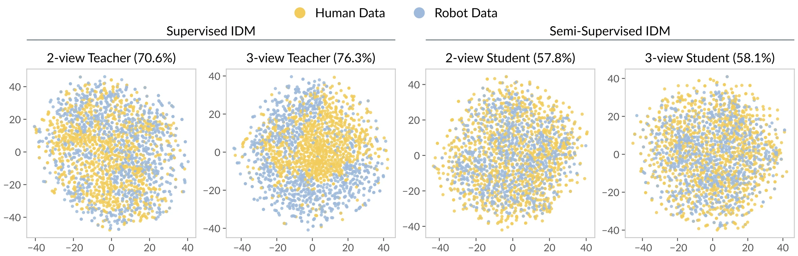

A
Co-training mixes human and robot latents
For human and robot windows with nearly the same action, the teachers keep the two domains apart, while the students mix them. The fraction of each window's nearest neighbors that come from the same domain drops from 70.6% (2-view) and 76.3% (3-view) in the teachers to 58% in both students, where 50% is full mixing.
Trained on robot data only
Human and robot latents remain more separated.
2-view IDM Both wrists
Teacher 70.6%
Student 57.8%
3-view IDM Both wrists + front
Teacher 76.3%
Student 58.1%
Same-domain nearest neighbors · 50% indicates full mixing
View all four static plots
